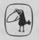

URSULA K. LEGUİN
UÇUŞTAN UÇUŞA
Çeviren:
ÇİĞDEM ERKAL İPEK
METİS YAYINLARI

LEGUİN KOLEKSİYONU
MÜLKSÜZLER 1991
ROCANNON'UN DÜNYASI 1995
BALIKÇIL GÖZÜ 1995
DÜNYAYA ORMAN DENİR 1996
BAĞIŞLANMANIN DÖRT YOLU 1997
UÇUŞTAN UÇUŞA 2004
Yerdeniz
YERDENİZ BÜYÜCÜSÜ 1994
ATUAN MEZARLARI 1995
EN UZAK SAHİL 1995
TEHANU 2000
ÖTEKİ RÜZGÂR 2004
YERDENİZ ÖYKÜLERİ 2001
KADINLAR RÜYALAR EJDERHALAR 1999